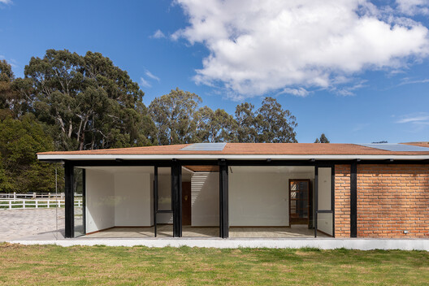

In Washington by SHED Cedar siding and a central breezeway
feature in this compact home in the Pacific Northwest
designed by US firm SHED for a couple who will soon retire.
Jenna McKnight | 24 October 2021 | 10 comments
Sloped walls form Canyon Drive housing complex
By LOHA in Los AngelesAmerican firm LOHA has completed a
row of sculptural, metal-clad homes in Los Angeles that
is meant to explore possibilities for the "small
lot subdivision typology".
Jenna McKnight | 22 October 2021 | 16 comments
House built from 100 different plant-based
Materials unveiled at Dutch Design Week
Eco-design studio Biobased Creations has built a
showhome almost entirely from biomaterials including
wood, mycelium, seaweed, straw and vegetable
fibres as well as earth and sewage.
Amy Frearson | 20 October 2021 | 3 comments

FWS_work designs Residence Was a tranquil
Retreat in the city Interior design studio
FWS_work has used natural materials and neutral
colours to complete this calming apartment renovation
in Xinpu, Taiwan, designed to offer the owner a
refuge from his busy job as a pilot.
Ali Morris | 17 October 2021 | 3 comments
Home Studios renovates Fort Greene Townhouse
Designed for entertaining .The gut renovation
of a Brooklyn brownstone for a chef and their family
led Home Studios to create spaces intended for
hosting dinner parties.
Dan Howarth | 15 October 2021 | Leave a comment
Stefano Boeri Architetti covers Palazzo Verde
in Antwerp with greenery
More than 1,000 plants
adorn the exterior of the Palazzo Verde housing
that Italian studio Stefano Boeri Architetti
has recently completed in Belgium.
Lizzie Crook | 13 October 2021 | 13 comments